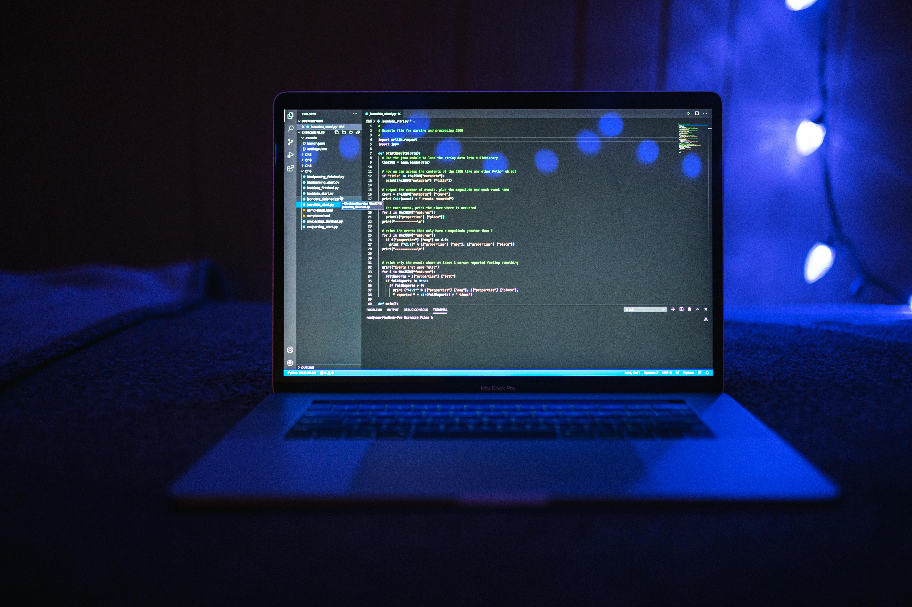

Go to last
About Me
I am Edun Boluwatife Esther, with a background in Chemistry and Pharmaceutical Chemistry.
I have worked as a teacher, a research assistant and as an In-Process Quality Control Officer.

I am now training in data science because I believe data can solve real-world problems. I am curious, detail-oriented and love learning new things.

FUN SIDE
When I am not working, you will probably find me exploring ideas, learning something new or enjoying a gist with friends
Back to top